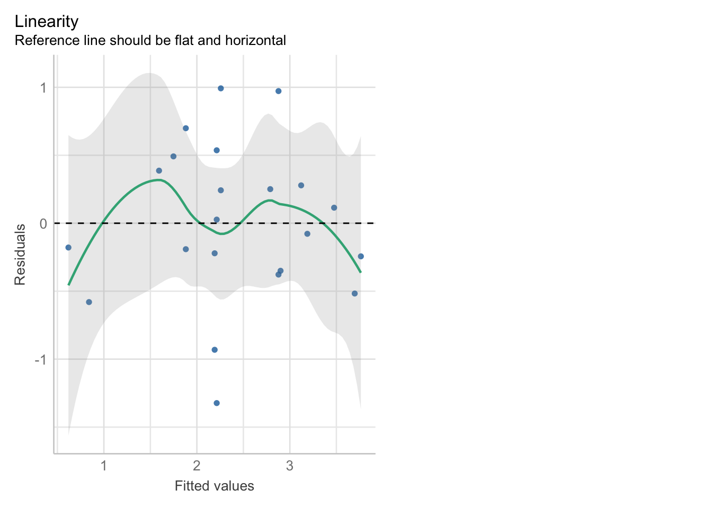

library(readr)
library(ggplot2)
library(dplyr)
greym_data <- read_csv("data/chap16q15LanguageGreyMatter.csv")
greym_scatter <- ggplot(data = greym_data,
aes(x = greymatter,
y = proficiency)) +
geom_point() +
labs(title = "Assocation between Second Language Proficiency & Grey-Matter Density",
y = "Second Language Proficiency",
x = "Grey-Matter Density") +
stat_smooth(method = "lm")
greym_scatterHW5 Correlation & Linear Models
BIOL 607
1) Correlation
a. Displaying Correlation
b. Calculating Correlation
library(GGally)
greym_data |>
ggpairs()Correlation between Second Language Proficiency and Grey-Mater Density = 0.818
c/d. Assumptions
Linearity
library(performance)
greym_lm <- lm(proficiency ~ greymatter, data = greym_data)
check_model(greym_lm, check = "ncv") |> plot()
In this graph we see this assumption is slightly off then what we were expecting but nothing alarming
Gaussian Model
check_normality(greym_lm) |> plot(detrend = FALSE)In this assumption we see that the majority of dots fall along the line with some concern for the outliers in the beginning
Variance is Homogeneous
check_heteroscedasticity(greym_lm) |> plot()When visualizing this assumption we shoudl see a straight line, in this case we see it starts to begin straight then begins to go awry
Outliers
check_outliers(greym_lm) |> plot(type = "bar")This displays the outliers seen throughout the observations, we see that there is a lot of outliers in the first few outliers that may have impacted the other assumptions
f. Analyzing
After viewing the results, they do not completely demonstrate that second language proficiency affects grey-matter density. We can see this within our plots of assumptions where they don’t allign with the non-random pattern. This could be due to the small sampling (n) or the involvment of other possible variables could influence both variables.
2) Fieberg’s LizardBite
a. Fit Linear Model
library(abd)
library(visreg)
data(LizardBite)
lizardbite_mod <- lm(territory ~ bite, data = LizardBite)
visreg(lizardbite_mod, gg = TRUE)b. Assumptions
check_model(lizardbite_mod)- Assumptions
- Posterior Predictive Check
- We are looking at density of each model-predicted data against the observed data
- Expectation: The observed data is in line with a large majority of the model-predicted lines
- Linearity
- We are looking at if the terms of the model add up
- Expectation: The reference line should be semi-flat along the dotted black line at 0
- Homogeneity of Variance
- Here we are looking at the fitted values against the square root of the std residuals, testing the variance
- Expectation: The line should be semi-flat, but more importantly we should be focused on the symmetry of points accross the reference line
- Influence Observations
- We are observing the outliers within the model data
- Expectation: All points should be seen within the outside lines
- Normality of Residuals
- Testing to see if the residuals are normal in our model, by using a Q-Q plot
- Expectation: dots should fall along the line with little variation
- Posterior Predictive Check
c. Intercept and Slope
library(broom)
tidy(lizardbite_mod)# A tibble: 2 × 5
term estimate std.error statistic p.value
<chr> <dbl> <dbl> <dbl> <dbl>
1 (Intercept) -31.5 23.5 -1.34 0.213
2 bite 11.7 4.85 2.41 0.0393Intercept = -31.53929
Slope = 11.67730
d. Confidence Interval for Intercept and Slope
confint(lizardbite_mod) 2.5 % 97.5 %
(Intercept) -84.728586 21.65001
bite 0.709847 22.64474e. Standard Error of Slope
The standard error of the slope parameter means the variability in the slope accross different possible samples. This standard error of the slope gives us an idea how the sampling distribution looks like, which is the possible slope values we would get if we sampled the population again.
f. Confidence Interval for Mean
bite5 <- data.frame(bite = 5)
predict(lizardbite_mod, bite5, interval = "confidence") fit lwr upr
1 26.84719 22.51035 31.18403predict(lizardbite_mod, bite5, interval = "prediction") fit lwr upr
1 26.84719 13.05339 40.64099The Confidence Interval gives a range for the mean territory size for lizards that have a bite force of 5.
The Prediction Interval gives a range for territory size for individual lizards with a bite force of 5, thus having a wider range.
To predict a territory size for a specific lizard use Prediction Interval, for estimating average territory for all lizards with a bite force 5 use Confidence Interval.
3) LaTeX
\[ Y_i = \beta_0 + \beta_0X_i + \epsilon_i \] \[ \epsilon_i \sim \mathcal{N}(0,\sigma) \]
4) Whitlock & Shluter CH. 17-30
a.
NucTeeth_data <- read_csv("data/chap17q30NuclearTeeth.csv")
NucTeeth_mod <- lm(deltaC14 ~ dateOfBirth, NucTeeth_data)
tidy(NucTeeth_mod)# A tibble: 2 × 5
term estimate std.error statistic p.value
<chr> <dbl> <dbl> <dbl> <dbl>
1 (Intercept) 33318. 3108. 10.7 0.0000000393
2 dateOfBirth -16.7 1.57 -10.6 0.0000000430Estimated Slope of Regression Line = -16.71066
b.
I can’t see the image clearly, but the confidence bands indicate the 95% confidence interval showing the range for average birth year for a specific 14C measurement.
c.
I still can’t view the graph, but the prediction interval gives a range of expected year of birth for an individual with a specific 14C measurement. The prediction intervals’ range is wider that confidence bands because they account for individual variablility.
d.
NucTeeth_predict <-
augment(NucTeeth_mod,
interval = "prediction",
newdata = data.frame(
dateOfBirth = seq(1960, 1995, length.out = 5)))
NucTeeth_plot <- ggplot(data = NucTeeth_data, mapping = aes(x = dateOfBirth, y = deltaC14)) +
geom_point() +
stat_smooth(method = "lm", fill = "Orange") +
geom_line(data = NucTeeth_predict,
mapping = aes(y = .fitted),
color = "red") +
geom_ribbon(data = NucTeeth_predict,
aes(y = .fitted,
ymax = .upper,
ymin = .lower),
alpha = 0.2,
fill = "Blue") +
xlim(1960,1993) +
labs(x = "Date of Birth",
y = "Delta C14")
NucTeeth_plotImpressing Myself // Intervals and Simulation
library(mnormt)
deet <- read.csv("data/17q24DEETMosquiteBites copy.csv")
deet_mod <- lm(bites ~ dose, deet)
vcov(deet_mod) (Intercept) dose
(Intercept) 0.09929780 -0.025986850
dose -0.02598685 0.007437073IYa. Fit Simulations
coef_mean <- coef(deet_mod)
coef_vcov <- vcov(deet_mod)
simulated_coefs <- rmnorm(100, mean = coef_mean, varcov = coef_vcov)
simulated_df <- data.frame(intercept = simulated_coefs[,1], slope = simulated_coefs[,2])
simulated_df$group <- "Simulated Fits"
ggplot(deet, aes(x = dose, y = bites)) +
geom_abline(data = simulated_df, aes(intercept = intercept, slope = slope, color = group),
alpha = 0.2) +
geom_smooth(method = "lm", se = TRUE, aes(color = "Fitted Model"), size = 1) +
scale_color_manual(name = "Model Type", values = c("Fitted Model" = "blue", "Simulated Fits" = "red")) +
geom_point(size = 0.75) +
labs(title = "Simulated Fits vs. Fitted Model", x = "Dose", y = "Bites") +
theme_minimal()IYb. Prediction Simulations
simulated_df$group <- "Simulated Fits"
new_data <- data.frame(dose = seq(min(deet$dose), max(deet$dose), length.out = 100))
predictions <- predict(deet_mod, newdata = new_data, interval = "prediction")
pred_df <- data.frame(dose = new_data$dose,
fit = predictions[, "fit"],
lwr = predictions[, "lwr"],
upr = predictions[, "upr"])
ggplot(deet, aes(x = dose, y = bites)) +
geom_abline(data = simulated_df, aes(intercept = intercept, slope = slope, color = group), alpha = 0.2) +
geom_line(data = pred_df, aes(x = dose, y = lwr, color = "Prediction Interval"), linetype = "dashed") +
geom_line(data = pred_df, aes(x = dose, y = upr, color = "Prediction Interval"), linetype = "dashed") +
geom_point() +
geom_smooth(method = "lm", aes(color = "Fitted Model"), size = 1) +
scale_color_manual(name = "Model Type", values = c("Fitted Model" = "blue",
"Simulated Fits" = "red",
"Prediction Interval" = "black")) +
labs(title = "Simulated Prediction Intervals vs. Calculated Intervals",
x = "Dose",
y = "Bites") +
theme_minimal()